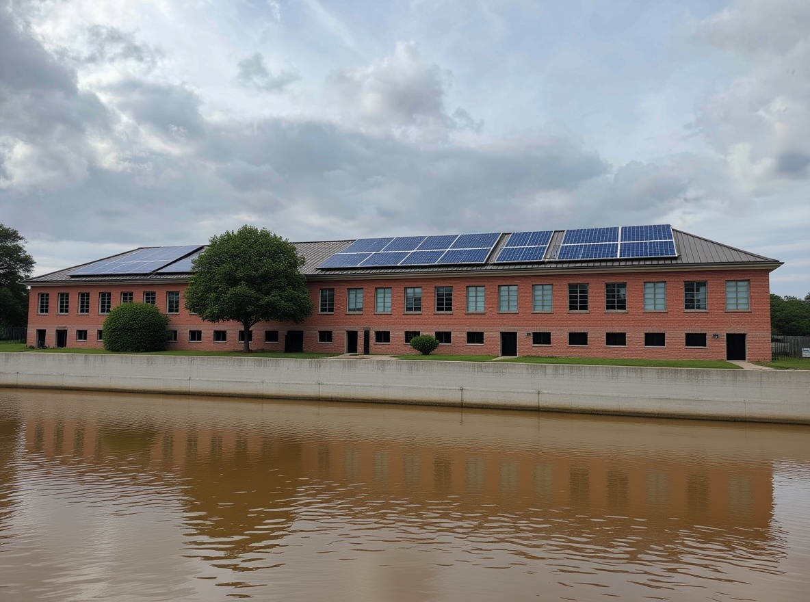
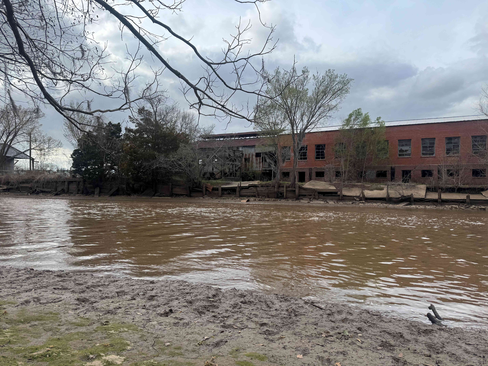
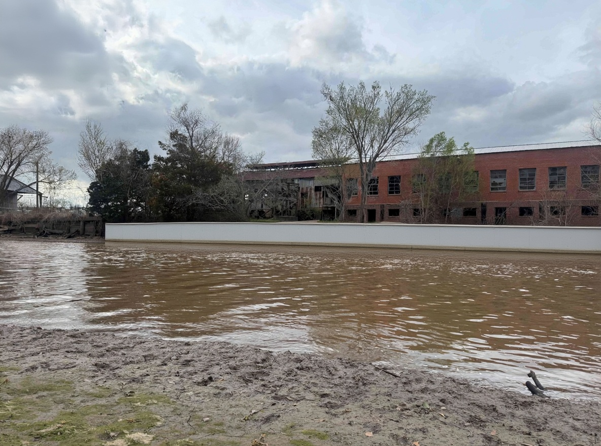
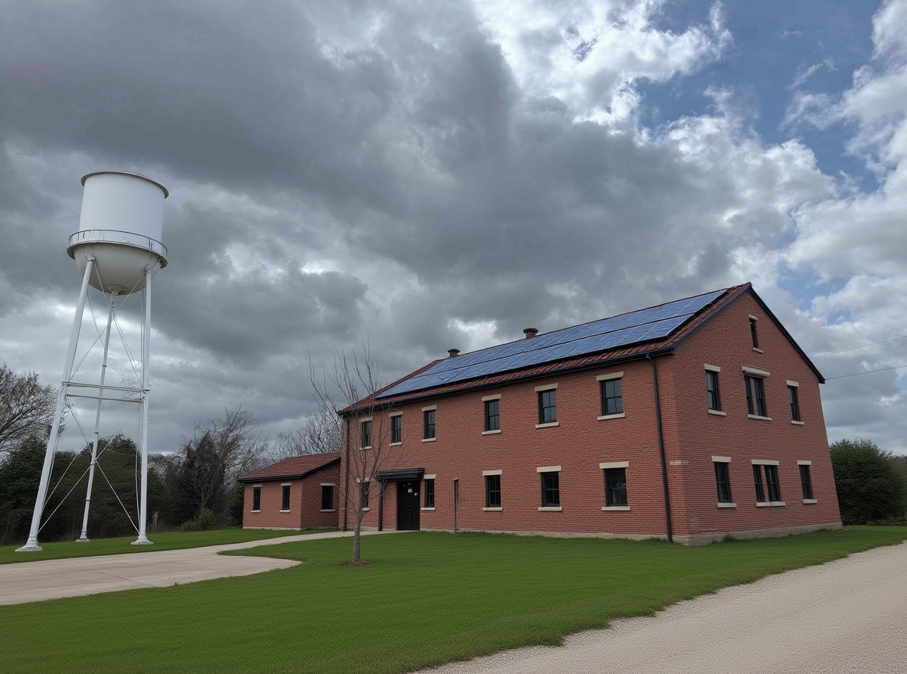
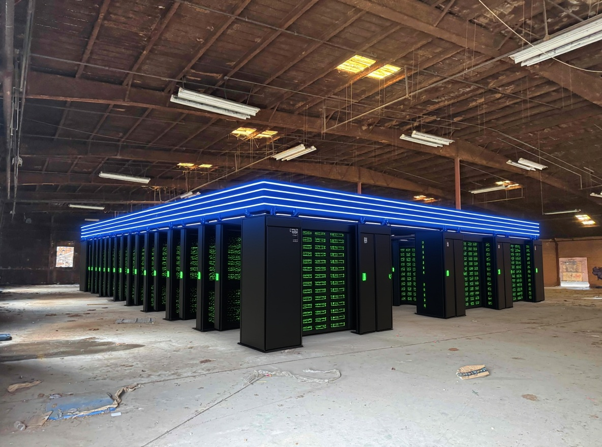
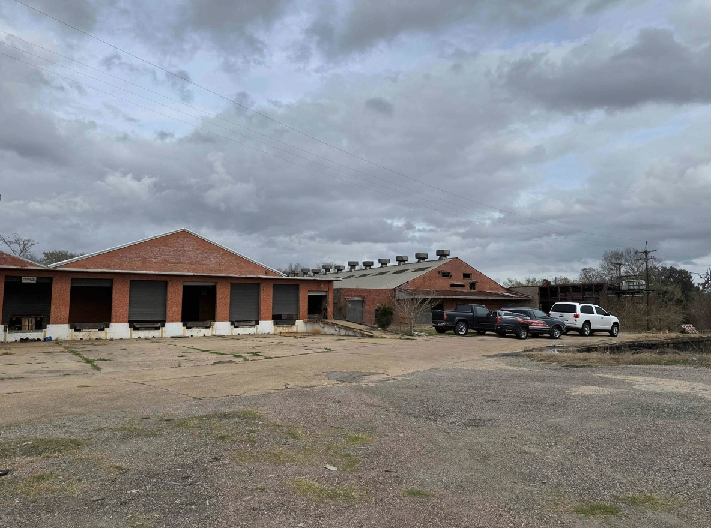

← Back to Ragin' Cajun Campus
Operations
Ragin' Cajun Compute Campus — Renderings
5 Kontext edits on real site photos | Restoration vision — same buildings, repaired and maintained
Before / After — Restoration Vision
Riverfront — The Hero Shot
Before — Abandoned 30+ Years

After — Restored with Solar
Riverfront — Wide View

Before — From the Bayou

After — Seawall Restored
Water Tower + Warehouse
Before — Debris, Graffiti, Decay

After — Cleaned, Solar, Landscaped
Rear Warehouse Interior
Before — Empty Warehouse

After — GPU Compute Hall
Street Entrance + Loading Docks
Before — Abandoned Entrance

After — Active Campus